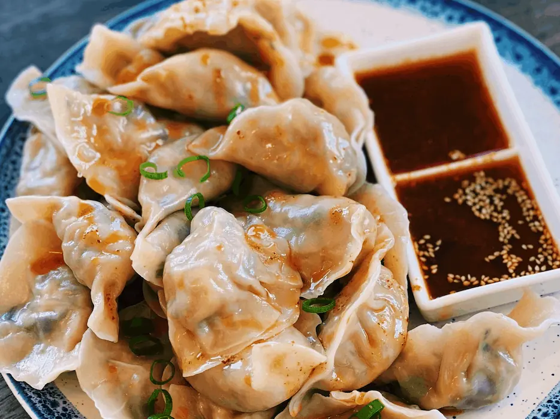

Hot and Sour Dumplings
If you want to spice up your dumplings, try making my hot and sour dumplings that take less than 10 minutes to make!
Hot and Sour Dumplings is one of my favorite ways to enjoy dumplings, and it is super easy to make at home. You can use any dumpling of your choice, but I am using homemade dumplings today.
The soup is savory, spicy, tangy, and full of flavor. You can adjust the amount of spice depending on your spice tolerance.
Ingredients
- 1.5 lb of boneless chicken thigh
- ½ chopped Cabbage (around 1lb)
- 2 tbsp of Salt
- 3 stalks of Green Onion
- 2 tbsp of Sesame Oil
- 1.5 tbsp of Ginger (grated)
- 1 tsp of White Pepper
- 1 tbsp of Dashi Powder or Chicken Powder
- 1.5 tbsp of Soy Sauce
- 50 Dumpling Wrapper
There are two ways to enjoy these delicious Chicken Dumplings. You can pan fry, or boil.
Pan-fried Dumplings
The first way is to pan-fry them. The key to making sure the wrapper doesn’t stick to the pan is to use a good non-stick pan. To check if the dumplings are cooked, you can poke a hole, and if the juices are clear, the dumpling is cooked.
Instructions
- In a non-stick pan, drizzle in oil and turn the heat up to medium-high.
- Once the pan is hot, add in the dumpling and pan-fry for 2 minutes.
- Add in water until ¼ of the dumpling is covered in the water. Put the lid on and let it cook for 8-9 minutes.
Boiled Dumplings
The second way, which is the easy way, is to boil the dumplings. I like boiled dumplings more than pan-frying because it is faster, and I like how soft the wrapper is.
- Boil a pot of water. Once the water is boiling, add in the dumplings. Once the dumplings float, cook for another 2 minutes. It will take around 8-10 minutes.